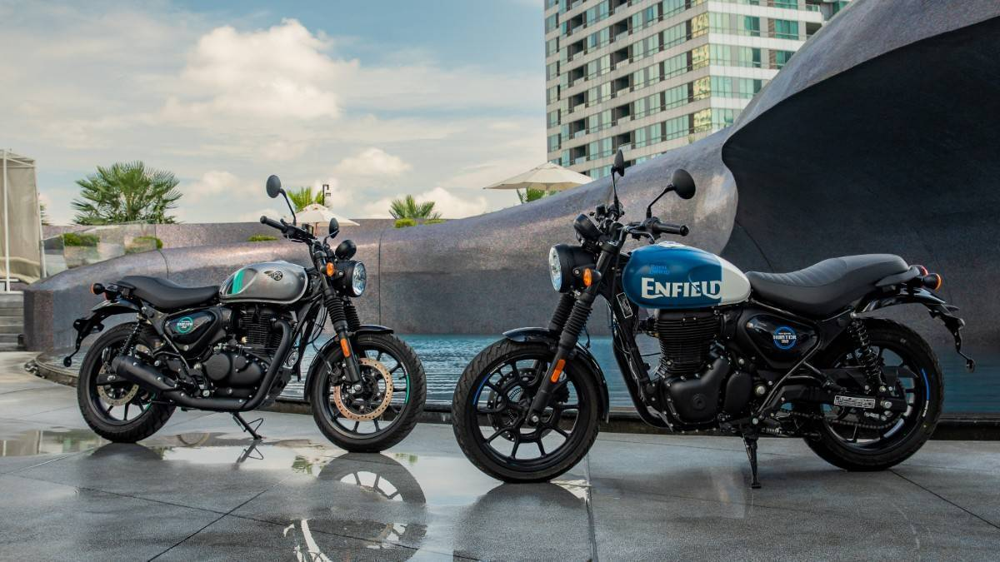
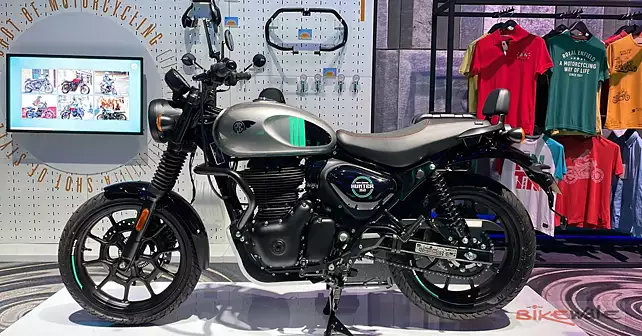
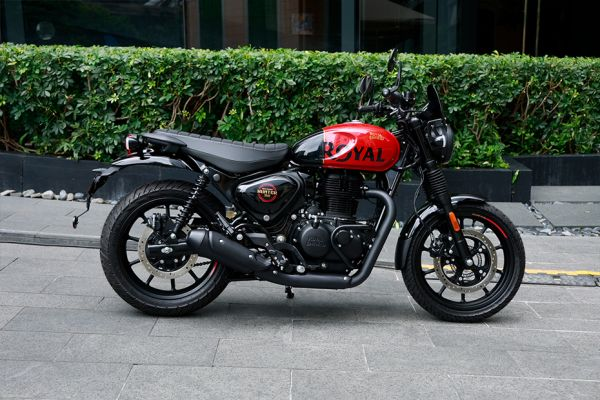

Features
Mileage
36.2 kmpl This Hunter 350 engine generates a power of 20.4 PS @ 6100 rpm and a torque of 27 Nm @ 4000 rpm. The claimed mileage of Hunter 350 is 36.2 kmpl.category
Being a J-series model, the Hunter 350 gets the same 349cc, single-cylinder engine that powers the Classic and Meteor 350s. It puts out 20hp and 27Nm, which is adequate for a bike of this size, and comes paired with a 5-speed gearbox.Top speed
114 km/h
Gallery



Reviews
Be it the Hunter's low seat height, its linear and relaxed throttle response, or the comfortable ergonomics; these are positives that make it a likeable and accessible machine on the daily commute. Not surprisingly, these attributes also make the motorcycle an agreeable companion on longer rides.
Avinash Praveen